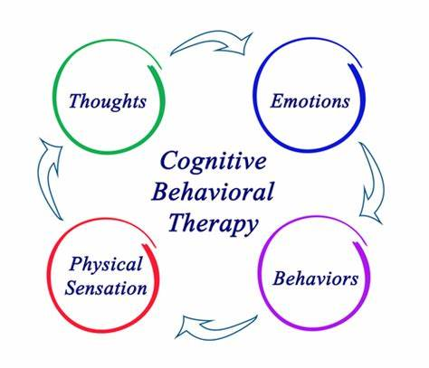

Introduction
Behavioral therapy is an umbrella term for types of therapy that treat mental health disorders. It's based on the idea that all behaviors are learned and that behaviors can be changed.
This form of therapy looks to identify and help change potentially self-destructive or unhealthy behaviors. The focus of treatment is often on current problems and how to change them.
Behavioral therapy can benefit people with a wide range of disorders.
Behavioral therapy for children
- Applied behavioral therapy and play therapy are both used for children. Treatment involves teaching children different methods of responding to situations more positively.
- A central part of this therapy is rewarding adaptive behaviors that benefit a child's functioning and discourage maladaptive behaviors, or those that interfere with a child's best possible functioning.
- This therapy often requires multiple people in a child's environment to be committed to the process, including parents, teachers, and other important figures.
- It may take children some time to trust their counselor. This is to be expected.With time, patience, and focus on building trust, a child may warm up to the point of being able to fully express themselves. This also is heavily dependent on the age of the child.
- Autistic children with ADHD often benefit from behavioral therapy.
Disorders treated with Beavioural Theraphy
People most commonly look for behavioral therapy to treat:
- depression
- anxiety
- panic disorders
- disorders involving excessive anger, like intermittent explosive disorder
- eating disorders
- post-traumatic stress disorder
- attention deficit hyperactivity disorder (ADHD)
- phobias, including social phobias
- obsessive compulsive disorder
- self-harming behavior, like cutting substance use disorders
It can also help treat conditions and disorders like:
Types
Cognitive behavioral therapy
Cognitive behavioral therapy is extremely popular. It combines behavioral therapy, which focuses on patterns of action, with cognitive therapy, which focuses on patterns of thought.
Treatment is centered around how your thoughts and beliefs influence your actions and moods. It often focuses on your current problems and how to solve them. The long-term goal is to build thinking and behavioral patterns that help you achieve a better quality of life.
Cognitive behavioral play therapy
Cognitive behavioral play therapy is commonly used as a treatment for mental health conditions in children. By watching a child play, a therapist is able to gain insight into what a child is uncomfortable expressing or unable to express.
Children may be able to choose their own toys and play freely. They might be asked to draw a picture or use toys to create scenes in a sandbox. Therapists may teach parents how to use play to improve communication with their children.
In this form of play therapy, the therapist also takes a more direct approach by working with both the child and the caregivers to teach the child how to cope well and achieve their defined goals. The therapist is doing more than just watching the child play.
Acceptance and commitment therapy (ACT)
ACT is a type of psychotherapy that includes behavioral analysis performed by a mental health clinician. While sometimes compared with CBT, ACT has its own specific approach. ACT is based on relational frame theory, which focuses on mental processes and human language.
In ACT, people are taught mindfulness skills and acceptance strategies with the goal of increasing psychological flexibility. Additionally, commitment and behavior change methods are used.
Dialectical behavioral therapy (DBT)
DBT was created by Dr. Marsha Linehan to help treat the symptoms of borderline personality disorder (BPD), an emotional regulation disorder marked by suicidal behavior, depression, unstable personal relationships, and other symptoms.
DBT can also be helpful for conditions other than BPD.
In this form of play therapy, the therapist also takes a more direct approach by working with both the child and the caregivers to teach the child how to cope well and achieve their defined goals. The therapist is doing more than just watching the child play.
Acceptance and commitment therapy (ACT)
ACT is a type of psychotherapy that includes behavioral analysis performed by a mental health clinician. While sometimes compared with CBT, ACT has its own specific approach. ACT is based on relational frame theory, which focuses on mental processes and human language.
In ACT, people are taught mindfulness skills and acceptance strategies with the goal of increasing psychological flexibility. Additionally, commitment and behavior change methods are used.
Techniques
Systematic desensitization
Systematic desensitization is a process that helps you to become less sensitive to certain triggers. It relies heavily on classical conditioning, a type of unconscious and automatic learning that creates behavior. It's often used in the treatment of phobias.
During treatment, you're taught to replace your fear responses with relaxation responses, which begins with learning relaxation and breathing techniques.
Once you've mastered these techniques, your therapist will have you face your fear or fears at slowly increasing levels while you use these techniques.
Aversion therapy
Aversion therapy is often used to treat disorders like substance use disorder and alcohol use disorder. It works by teaching people to associate a stimulus (something that triggers a response) that's pleasant but unhealthy with an extremely unpleasant stimulus.
The unpleasant stimulus may be something that causes discomfort. For example, a therapist may teach you to associate alcohol with an unpleasant memory.